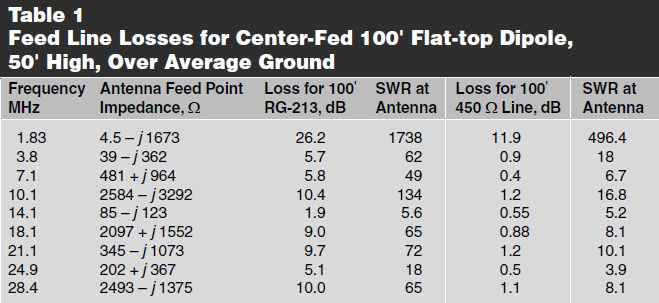
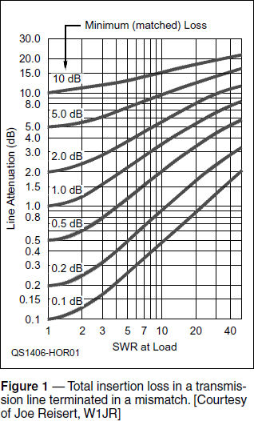
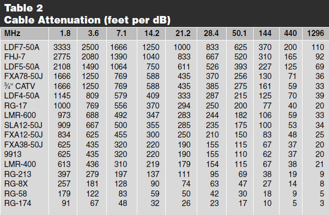

Experiment #137 — Choosing a Feed Line
An antenna system begins at a radio’s output connector and ends in the space around the antenna, including the ground and everything conductive that is nearby (in terms of wavelengths). One never uses just an antenna — rather, an antenna system! What often seems a simple task — measuring, cutting, and hanging up a skyhook — really involves many more questions than you might expect.
One of the questions you must answer is “What feed line do I use?” and, as with many technical endeavors, the answer begins, “It depends…” While the choice also involves cost and the mechanical aspects of installation, the focus of this column is on the electrical aspects. Assuming the feed line is adequately rated for the power levels you’ll be using, the choice boils down to loss in the line.
Evaluating Loss with TLW
Recently, Dean Straw, N6BV, former editor of The ARRL Antenna Book, updated his incredibly useful TLW program (Transmission Line for Windows).1 The result is a more accurate assessment of systems using open-wire feed line, aka ladder line or window line. Often used as the feed line for multi-band “doublets” (wire antennas fed in the middle but not necessarily resonant on any band used), open-wire line (OWL) is often assumed to be less lossy than an equivalent length of coaxial cable. With the new version of TLW available, it seemed like a good idea to check this out. (This discussion doesn’t include the loss of effects of baluns anywhere in the system.)
Starting with the center-fed, half-wave dipole used on a single band (and maybe on the third harmonic, too), the use of coax is a good choice for moderate feed line length. The feed line SWR and associated losses will be reasonably low, it’s easy to connect at both ends, and it lends itself well to switching arrangements between several antennas.
Let’s have a look at an example of this type of antenna system: a center-fed, 66-foot long inverted V, 50 feet above average ground, with 100 feet of feed line. According to EZNEC (www.eznec.com), at 7.1 MHz where the antenna is very nearly ½-wavelength long, the antenna’s feed point impedance is 65 – j 41 Ω or 77 ∠-32°.2 This load creates an SWR of 2.1:1 for 50 Ω cable. One hundred feet of RG-213 coax has a total line loss of 0.7 dB and the SWR at the transmitter end of the line is 1.9:1. (The online VSWR-RL-Reflection Coefficient calculator by Giangrandi is another excellent free tool.3)
If instead we fed the inverted V with the same length of 450 Ω OWL, the new version of TLW calculates SWR at the antenna to be 6.3:1 and the line loss as 0.43 dB. While it looks like OWL is slightly less lossy, that figure doesn’t include any losses in the impedance matching unit required at the line’s input where SWR is still 5.7:1. ARRL Lab measurements of full-legal limit antenna tuners shows an average loss of about 11% for an SWR of 4:1 on 40 meters, which is 0.7 dB.3 The total system loss when using OWL in this antenna system is about 1.1 dB. The advantage swings slightly more to coax for shorter feed line lengths and to OWL as feed line length increases.
Tuned Feeders
You can also use an old trick — tuned feeders — to reduce the need for impedance matching. If the OWL is extended to the closest length at which it is an integer number of ½-wavelengths long, the input and output impedances of the line will be very nearly the same. One wavelength of OWL at 7.1 MHz is 126 feet. At this length, a 50 Ω transmitter output sees an impedance of 73 – j 41 Ω (SWR of 2.1:1) and system loss is reduced to 0.5 dB, slightly better than for the coaxial cable. Adjusting the line length to 128.1 feet brings the system almost exactly to resonance with an input impedance of 73 Ω, an SWR of 1.5:1, and total system losses of 0.56 dB. Remember that this will only work on the one band and at the design frequency — you may still wind up needing impedance matchng at the band edges but the SWR will be lower than with the 100-foot feed line.
Feed Lines for Multi-band Doublets
The fun really begins when the antenna is to be used on several bands, including those for which the antenna is not an odd number of ½-wavelengths long, occasionally creating extreme feed point impedances. George Cutsogeorge, W2VJN, created an EZNEC model for The ARRL Antenna Book that shows center-fed feed point impedances on the HF ham bands for a 100-foot long doublet, installed at 50 feet over average ground.4 I used the new version of TLW to calculate losses and SWR at the antenna feed point for 100 feet of both RG-213 coax and 450 Ω OWL. All of the data is shown in Table 1.

In this common situation it’s not even close — feed line losses for OWL are uniformly lower than for coax, sometimes by a lot. That’s not the entire story because you’ll still have to provide some kind of impedance matching device at the transmitter most of the time. As we have seen, that adds additional losses, regardless of whether the feed line is OWL or coax. In general and except in extraordinary cases, the old advice is still good: OWL is best for feeding multi-band, non-resonant antennas from the perspective of system losses.
Feed Lines for Matched Antennas
Most of our ham-band antennas, whether Yagis, dipoles, or ground-plane verticals, are designed with a feed point impedance that matches 50 Ω coaxial cables. For these antennas, OWL would not be a good choice due to mechanical and impedance matching considerations. So, how does one choose the right coax for these antennas?
You could start with the manufacturer’s specified loss per standard length (usually 100 feet) and pick the lowest-loss line you can afford. However, antenna system designers generally approach the problem from the standpoint of allowable loss. In other words, what is the maximum acceptable amount of feed line loss? They select feed line that for the required length will have less loss than the maximum amount. This is a somewhat harder problem to solve because of the calculations involved.
You’re in luck, however, because Frank Donovan, W3LPL, has performed those calculations already. The results are in Table 2 (related tables are also available in The ARRL Antenna Book, 22nd Edition), which shows the length of cable that results in 1 dB of matched loss — the loss for a feed line terminated in its characteristic impedance.
To use these figures, begin by dividing the length of feed line you’ll need to use by the maximum acceptable loss in dB. This determines the lower limit for the number of feet per dB of loss in the cable. Find the column showing the frequency at which you are working. Locate the entry in that column with the lowest value of feet/dB greater than the calculated lower limit. That cable is the lossiest you can use and still satisfy your total loss requirement. For example, if you can tolerate 5 dB of feed line loss in a 300-foot run at 440 MHz, your lower loss limit is 300 / 5 = 60 feet / dB. In the 440 MHz column, LDF4-50A hardline is the lossiest cable you can use — start shopping! Note that the values of feet/dB don’t increase uniformly from bottom to top due to variations in cable performance over the wide frequency range shown in the table.
What if the cable is not matched? Additional loss will result as the power is reflected back and forth in the feed line. Figure 1 shows just how much more loss. This chart, developed by Joe Reisert, W1JR, combines matched loss and additional SWR-caused loss into a single set of curves.5 To find the total loss of your feed line, start with the load SWR (at the antenna) on the horizontal axis. Travel vertically to the curve (or an interpolation between curves) corresponding to the matched loss of the feed line you’ve selected. Travel horizontally to the vertical axis to find the total attenuation of the feed line. If this total is still below your maximum allowed loss, you can use that cable. If not, find the point at which the maximum allowed loss and load SWR intersect. That will show the maximum matched loss you can accept. You can then work backwards using Table 2 to find the cable you need.


Feed line selection is not always so complicated. Most of the time you can just hook up the antenna and you’ll work stations. To be sure you’re getting the most out of your precious watts, though, these sorts of tools can help you make your decision.
1Transmission Line for Windows, version 3.21, by Dean Straw, N6BV. See www.arrl.org/qst-in-depth for software availability.
2Joel Hallas, W1ZR, The ARRL Guide to Antenna Tuners, Chapter 14, ARRL, 2010.
3“Conversions between VSWR — Return Loss — Reflection coefficient,” Iacopo Giangrandi, www.giangrandi.ch/electronics/anttool/swr.html.
4The ARRL Antenna Book, 22nd Edition, Chapter 24, ARRL, 2012.
5Hands-On Radio Experiment #119 “The Q3Q Balun Redux.” All previous Hands-On Radio experiments are available to ARRL members at www.arrl.org/hands-on-radio.